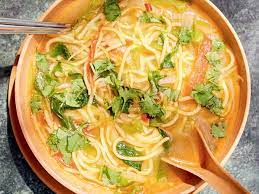
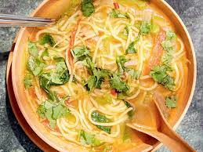

Thukpa
Thukpa is a Himalayan noodle soup, usually served with meat and is really delicious with lean chicken. It is popular in Tibet, Bhutan, Nepal, and some parts of India. "Thuk" means heart so it is a heart warming dish. In Bhutan it would usually be made with buckwheat noodles
 

Bamboo shoot
From boiled vegetables to meat and from pickles to chutneys, each dish in Arunachal Pradesh is not complete without bamboo shoots. Wondering why? It is a famous food which you must try. Also, the popular and traditional Bamboo Shoot dish is made with delicate bamboo. It is marinated in baking soda and freshly ground spices on a low fire. It’s a side dish that Arunachalis relish with their supper.

Pika pilla
Pika Pila is a famous type of pickle. It is mostly made by the Apatani tribe of Arunachal Pradesh from pork fat and bamboo shoot with king chilli. King Chilli is known as Bhut Jolokia. This is the hottest chilli, which is very common in the north-eastern states.